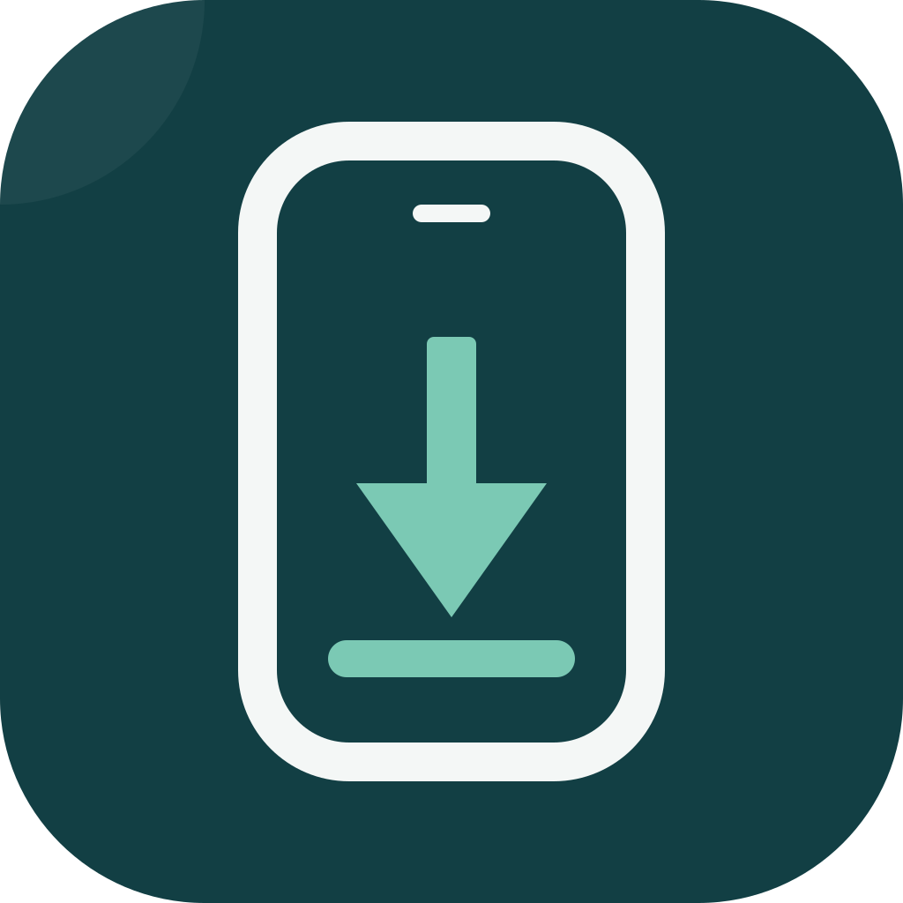

Guided environment setup
Prepare Swift, xtool and your device connection inside a dedicated WSL distribution. Supply your own Xcode download and Apple ID when prompted.

WiniOS StudioOpen source · Windows desktop · Early preview
Build, sign and install SwiftUI apps on your own iPhone. WiniOS Studio guides the setup and brings the deployment steps together, without a Mac in your local workflow.
Powered by xtool · Apache-2.0 · English & Spanish interface
WiniOS Studio coordinates the toolchain, project and device so you can focus on your SwiftUI app, with the original technical output available when you need it.
Prepare Swift, xtool and your device connection inside a dedicated WSL distribution. Supply your own Xcode download and Apple ID when prompted.
Create a SwiftPM project from a template and open it in VS Code with the Swift extension and language server configured.
Build, sign, package and install on a connected iPhone, then verify installation. Each phase has its own output and status.
See what needs attention, from device trust to signing. Installation and app launch are reported separately so you know what actually happened.
Start with the Windows installer from GitHub Releases. The initial setup includes downloads and may require Windows permissions or a restart.
Run the installer and follow the assistant to prepare the dedicated WSL environment and development tools.
Provide your Xcode.xip, sign in with your Apple ID and connect an unlocked iPhone over USB.
Create a SwiftUI project, edit it in VS Code and select “Run on my iPhone”. Follow any device actions shown.
Prefer building from source? See the installation documentation.
These are project-reported results from one test machine, as of . Broader device and Windows coverage is still being tested.
| Component | Status | Scope |
|---|---|---|
| Windows 11 x64 + WSL2 | ✓ Verified | Full setup → build → install cycle on one machine |
| iPhone on iOS 27.0 | ✓ Verified | Installation and verification with a free Apple ID |
| Swift 6.4.1 + xtool 1.22.2 | ✓ Verified | Inside the dedicated WSL distribution |
| Apple Mobile Device Service | ✓ Verified | Classic iTunes service, version 12.13.11.1, with a TCP bridge |
| Windows 10 / other iOS versions | ○ Unverified | Further hands-on testing needed |
| Paid Apple Developer API-key login | ○ Unverified | Not exercised in WiniOS testing yet |
| Windows ARM64 | ○ Unverified | The current installer and toolchain target x64 |
| iOS Simulator, SwiftUI Previews, hot reload | — Unavailable | Not supported in the current product |
Existing .xcodeproj import | — Unavailable | Start with the SwiftPM/SwiftUI template today |
WiniOS Studio uses xtool inside WSL2 to build SwiftPM/SwiftUI projects and install them on a connected iPhone. It is an early pre-release with a limited tested configuration. Apple's SDK license restrictions also apply; read the section below before using this workflow.
Not in the current release. Built-in Codex integration, change review and Build & Fix are on the roadmap. Today, you create a project from a SwiftUI template and edit its code.
A free Apple ID can be used for testing on your own iPhone. Free provisioning expires after seven days and has Apple-imposed limits. App Store distribution is outside the current release's scope and requires the appropriate Apple Developer membership.
No. You test on your physical iPhone. Device screen capture is planned. Automatic launch can fail on iOS 27; if installation succeeds, you may need to open the app manually.
Not yet. The current workflow starts from a SwiftPM/SwiftUI template. Importing .xcodeproj projects is on the roadmap.
Yes. The repository is licensed under Apache-2.0 and uses xtool as its underlying engine. You can inspect the source, report problems and contribute on GitHub.
The Xcode and Apple SDKs Agreement restricts using Apple SDKs on non-Apple-branded computers. Downloading your own Xcode archive does not remove that restriction. WiniOS Studio does not redistribute Apple software and is not affiliated with or endorsed by Apple. Review the applicable terms before using the local Windows workflow.
Have Windows and an iPhone? Try the preview and report your Windows version, iPhone model, iOS version and the step where you got stuck. Remove account details and other secrets from logs before sharing.